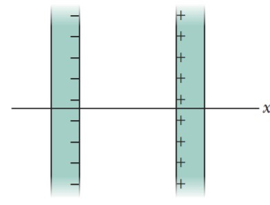
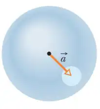

Chapter 23, Problem 36

In Figure, two large, thin metal plates are parallel and close to each other. On their inner faces, the plates have excess surface charge
densities of opposite signs and magnitude \(7.00\times10^{22} C/m^2\).
In unit-vector notation, what is the electric field at points (a) to the left of the plates, (b) to the right of them, and (c) between them?
(a) To the left of the plates: 0
(b) To the right of the plates: 0
(c) Between the plates:
\(\vec E=\Bigg(\dfrac{\sigma}{2\epsilon_0}\Bigg)(-i)+\Bigg(\dfrac{\sigma}{2\epsilon_0}\Bigg)(-i)=\Bigg(\dfrac{\sigma}{\epsilon_0}\Bigg)(-i)\)
\(=-\Bigg(\dfrac{7.00\times10^{-22} C/m^2}{8.85\times 10^{-12} C^2/N.m^2}\Bigg)\)
\(=-7.91\times10^{-11}\,N/C\)
-(\frac{\placeholder[a]{7.00\times10^{-22}}}{\placeholder[b]{8.85\times 10^{-12}}})
Chapter 23, Problem 40

A nonconducting solid sphere has a uniform volume charge density ρ. Let be the vector from the center of the sphere to a general point P within the sphere.
(a) Show that the electric field at P is given by \(\vec E=\rho\vec r/3\epsilon_0\) (Note that the result is independent of the radius of the sphere.)
(b) A spherical cavity is hollowed out of the sphere, as shown in the figure. Using superposition concepts,
show that the electric field at all points within the cavity is uniform and equal to \(\vec E=\rho\vec r/3\epsilon_0\) where is the position vector from the center of the sphere to the center of the cavity.
(a) From Gauss’ law, we get
\(\vec E(\vec r)=\dfrac{1}{4\pi\epsilon_0} \dfrac{q_{enc}}{r^3}\vec r
= \dfrac{1}{4\pi\epsilon_0}\dfrac{(4\pi\rho r^3/3)}{r^3}\vec r = \dfrac{\rho\vec r}{3\epsilon_0}\)
(b) The charge distribution in this case is equivalent to that of a whole sphere of charge density ρ plus a smaller sphere of charge density -ρ that fills the void. By superposition :
\(\vec E(\vec r) = \dfrac{\rho\vec r}{3\epsilon_0} = \dfrac{-\rho(\vec r-\vec a)}{3\epsilon_0} = \dfrac{\rho\vec a}{3\epsilon_0}\)
Chapter 23, Problem 40

(a) Using Eq. 24-32, show that the electric potential at a point on the central axis of a thin ring (of charge q and radius R ) and at distance Z from the ring is,
\(V=\dfrac{1}{4\pi\epsilon_0}\dfrac{q}{\sqrt{(R^2+z^2)}}\)
(b) From this result, derive an expression for the electric field magnitude E at points on the ring’s axis; compare your result with the calculation of E in Module 22-4.
(a)
\(r=\sqrt{(R^2+z^2)}\)
\(V=\int\dfrac{1}{4\pi\epsilon_0}\dfrac{dq}{r}=\dfrac{1}{4\pi\epsilon_0}\dfrac{1}{\sqrt{(R^2+z^2)}}\int dq\)
\(\rArr V=\dfrac{1}{4\pi\epsilon_0}\dfrac{q}{\sqrt{(R^2+z^2)}}\)
(b)
\(E=-\dfrac{dV}{dz}=-\dfrac{d}{dz}\Bigg(\dfrac{1}{4\pi\epsilon_0}\dfrac{q}{\sqrt{(R^2+z^2)}}\Bigg)\)
\(=-\dfrac{1}{4\pi\epsilon_0}=\Bigg[-\dfrac{1}{2}(R^2+z^2)^{-3/2}(2z)q\Bigg]\)